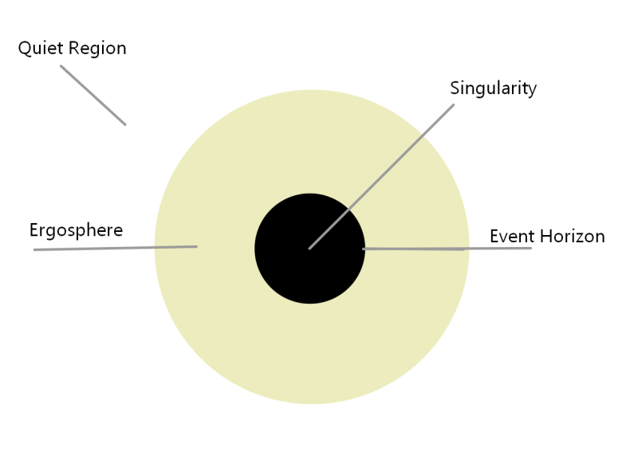
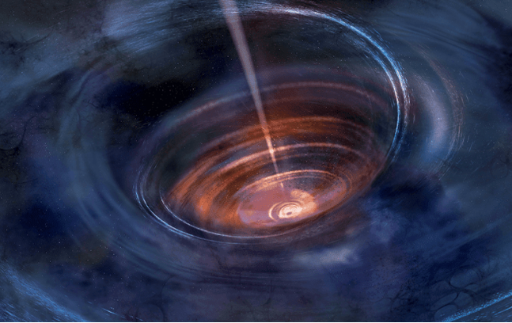
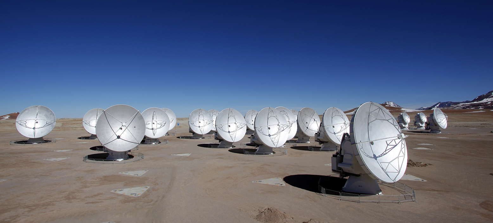
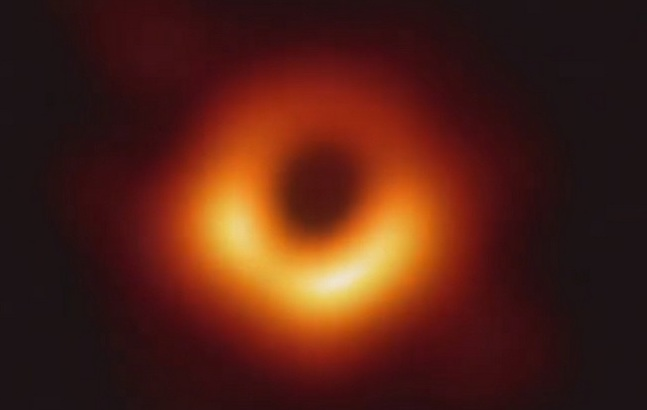

What is a black hole?
(Click to Continue)
What is a black hole?
- Originally predicted by Einstein’s theory of general relativity, A black hole is a great amount of matter in a very small area which causes a gravitational field so strong nothing can escape.
- There are two types of black holes:
- At 10 to 20 times the mass of our sun, Stellar Black holes are abundant in the Milky Way with anywhere from 10 million to 1 billion.
- Millions to Billions of times the mass of our sun, Super Massive black holes are generally believed to lie at the center of virtually all large galaxies.
Do black holes exist?
(Click to Continue)
Do black holes exist?
Yes, scientist have many ways of detecting black holes.
- Scientists observed 2 black holes colliding in 2015 in an event that happened 1.3 billion years ago.
- Scientist took a picture using an array of telescopes all around the earth. It took just 4 days to provide scientists with 5 petabytes of data which they turned into the image that you can see today.
- For decades, scientist have been observing x-rays and radio waves coming from the matter that is being spat out of black holes.
How do black holes form?

(Click to Continue)
How do black holes form?
- Black holes are made when a star at least 20 times the size of the sun reaches the end of its life and goes supernova collapsing in on itself.
- Stars that are less than 20 time the size of the sun but bigger than 10 times the size of the sun will turn into a neutron star. While stars that are less than 10 times the size of the sun will turn into a white dwarf.
- When a star nears the end of its life it runs out of hydrogen to fuse into helium this process produces a lot of energy. When it gets to this state the star starts to fuse Helium into the next element and so on until it reaches iron, at this point it starts going supernova.
What evidence can be used to find a black hole?
(Click to Continue)
What evidence can be used to find a black hole?
- Scientists can observe the x-rays and radio waves that black holes produce. The black holes produce these by heating up particles to millions of degrees then spitting them out causing detectable x-rays and radio waves.
- They can also observe the gravitational anomalies around where they suspect a black hole may be to figure out if it is there of not. This includes the orbits of planets, gases and stars orbiting around the black hole.
How might that evidence be collected?
(Click to Continue)
How might that evidence be collected?
- To collect the evidence used to find black holes scientists generally rely on telescopes and satelites both on earth and in space.
- To obtain the image of black hole IRAS 13224-3809 scientists used many telescopes all observing the same point in space for 10 days, they then compiled over 5 petabytes of data in to one image.
- Scientist have been able to observe the collision of two black holes using a Laser Interferometer Gravitational-wave Observatory detectors.(LIGO)